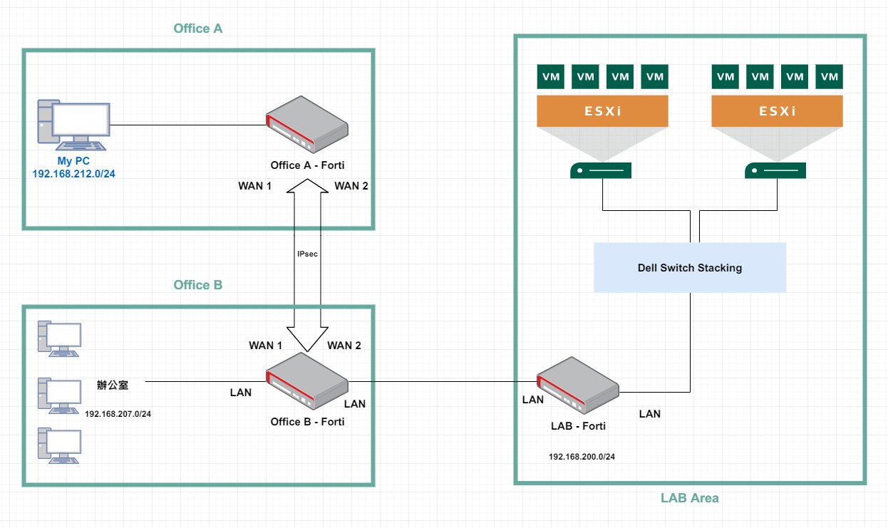

200 LAB Network 網通設備設定筆記
Contents
Cisco 3750G
前言日記
在記錄設定前先來段日記 XD，Cisco 3750G 章節紀錄機櫃搬遷後 Cisco 3750G 24TS 作為系統組自管 ToS (Top of Switch) 使用。
原先 K8s LAB 因為留停期間同事有拿來實驗 OpenStack，再加上大主管說要召回 Forti 200D，我就交接給同事自行處理/規劃了~~
我想辦公室的那四台 R620 應該非常夠我練習 Kubernetes 相關了~ 畢竟目前還在用 minikube 練 CKA。
Firmware IP Base 與 IP service 差異
▲ Cisco 3750 系列 Firmware 有分兩種不同 Firmware。
What is the difference between an IP base image and an IP services image
Catalyst 3750 and 3560 switches 在 IOS 版本 12.2(25)SEA (含) 以前 image (firmware) 分成兩種 (1) 提供 L2 詳細功能與簡易 L3 routing 的 Standard Multilayer Image (SMI) (2) 提供 L3 進階功能 例如: RIP, OSPF, BGPv4, EIGRP 的 Enhanced Standard Multilayer Software Image (EMI)
IP Base == SMI ; IP service == EMI
連接 console
這次做了一支 Linux Mint 21 LiveCD USB 當作隨插即用 Linux Base 的 OS。筆電連上區網 WiFi 後，我的 PC 就能透過 ssh 連入遠端操作~ 甚至透過 tmux 可以有「terminal 遠端桌面」的效果呢!
遇到一個很奇怪的問題: 接上 console 線後 dmesg | grep 'tty' 有看到 ttyUSB0，但 ll /dev/ttyUSB0 一開始能看到後來就會消失 @@ …
找到這篇 /dev/ttyUSB0 not present in Ubuntu 22.04 提供解法:
sudo apt remove brltty 之後重插 USB console 線，/dev/ttyUSB0 就能使用了~
Cisco 3750G 使用的 serial speed 是 9600 8N1，Hardware Flow Control 必須是 NO。
|
|
reset to factory
Resetting Catalyst Switches to Factory Defaults
|
|
▲ 如果只執行 write erase VLAN data 還會存在!!
|
|
VLAN
How To Configure VLANs On the Catalyst Switches
|
|
|
|
trunk mode
|
|
如果不下 switchport trunk encapsulation dot1q 會出現錯誤 Command rejected: An interface whose trunk encapsulation is "Auto" can not be configured to "trunk" mode.
copy running-config to startup-config
|
|
set IP address
|
|
set hostname
|
|
set password
Configure Enable Password Settings
|
|
set SNMP
|
|
Upgrade Firmware
3750 Series Switch Stack IOS Upgrade - Manual (.bin Image)
[檔名/SHA-512 這邊找] Catalyst 3750V2-24TS Switch
debug 後記
.253必須綁在 VLAN interface 身上，而不是 Giga 1/0/24 (進線) 實體 interface 身上。- 要跨網段 ping 必須給定 default gateway (很基本，但當時腦袋一直卡在 L2 思考 @@)
Dell Switch
型號: Dell PowerConnect 8132F -> Storage 使用
型號: Dell PowerConnect N4032F *2 (stacking) -> 對接 Dell PowerEdge Server
Dell Switch reset to factory
|
|
Dell Switch set hostname
|
|
請 Willy 查找是否有 loop
用 tmux 就能達到「遠端桌面」的效果，Willy 哥下命令的同時我這邊可以同步看到畫面 抄~筆~記
xshell 登入 xxx_dell_switch_console 192.168.200.49 密碼 xxx
接著輸入 tmux att -> minicom 按下 Enter 後即可使用
Willy 大大下命令的同時我這邊也看的到，可以順便解釋一下 XD
|
|
Dell Switch N4032F 身上的 SFP+ 是使用 “SFP-10G-SR”，正常 db 值可以參考 Dell 官網的 datasheet
dell-networking-optics-spec-sheet.pdf
stacking
How to stack and unstack a member in Dell EMC Networking N4000 switch | Dell 台灣
LACP
|
|
|
|
How to create Link Aggregation Groups (LAGs) on Dell Networking PowerConnect Switches | Dell 台灣
How to use the interface range command for N1500 switches | Dell 台灣
How to Configure Switchport Modes on Dell EMC Networking N Series Switch | Dell 台灣
VLAN
Access mode port
|
|
Dell EMC Networking Configuring VLAN on Switches | Dell 台灣
Trunk mode port
|
|
How to Configure Switchport Modes on Dell EMC Networking N Series Switch | Dell 台灣
snmp (尚未設定)
How to configure SNMP on Dell EMC Networking N series switch | Dell 台灣
Jumbo frame (MTU 9000)
|
|
▲ 到 Equallogic 上確認 Jumbo Frame
interface to default
|
|
更新 Firmware
|
|
(這是後來 Dell Switch S4810 因為沒有 USB 孔使用的方式)
(沒有用到 SaltStack 單純看格式) Install or upgrade devices running Dell EMC Networking OS10 using SaltStack
|
|
[How-To] Upgrade the firmware on a Dell PowerConnect N2000/3000 series switch | Jack Stromberg
設定 SSH
How to set up management access for Dell Networking N2000, N3000 and N4000 Series Switches
設定 Management IP
|
|
設定 ssh 帳號
|
|
ssh server 設定
|
|
Forti 200D
Forti 200D reset to factory
|
|
變更 Forti GUI 閒置自動登出時間
Technical Tip: Changing the GUI idle timeout
routing table
Forti DDNS via CLI
用 CLI 設定就可以指定 DNS server 了~ (謝謝 Rock)
2021.09.23 [Debug] Wireshark 顯示 TCP Previous segment not captured
討論串在 xx 關鍵字就找 TCP Previous segment not captured 吧~ (更早之前的可能要用 192.168.200 當關鍵字)
特別感謝 TWNOG 社群技術支援~

▲ 當時附上的網路架構圖
Office B - Forti LAN: 192.168.200.253/24
LAB - Forti LAN: 192.168.200.254/24
All subnet 200 VMs in ESXi host default gateway is 192.168.200.254
查看完整設定檔 (Full Configuration)
|
|
設定 MTU 與 TCP Max Segment Size (MSS)
【官方有提供 MTU/MSS 大小算法】Interface MTU packet size
|
|
Windows 10 修改 MTU
cmd.exe 需要以 Administrator 開啟
|
|
問題已解決
問題解決了，先講結論 不是 IPsec tunnel MTU / TCP MSS 的問題。 兇手是雙重 NAT
(dest: 192.168.200.51 ) Office B 收到的 src 並不是 My PC 的 192.168.212.x/24 而是 IPsec tunnel 的 172.19.x.x/16 (Private IP，同事說做 health check 用的)
▲ 第一重 NAT
接著 Office B 會在做第二次 NAT，將 src 換成 Office B Forti 身上 interface 設定的 192.168.200.253/24 。
也就是我在 192.168.200.51 執行 w 看到的 FROM 是 192.168.200.253
▲ 第二重 NAT
同事先拆掉第二重 NAT，讓 w 下去看到 FROM 是 172.19.x.x 。 問題沒有解決，一樣會掉包。
兩層 NAT 都拆掉目前安好。
註: K8s-LAB Forti 有開啟 OSPF 相關設定來達成路由
ESXi host add static route
|
|
Configuring static routes for vmkernel ports on an ESXi host (2001426)
VCSA (vCenter) add static route
|
|
透過 API 加的 static route 是永久的，會被寫入 /etc/sysconfig/network/routes 當中。
Static Routes on VCSA 6.7 with Api Commands - GiovanniDominoni.it
Author 老柯
LastMod 2021-07-22